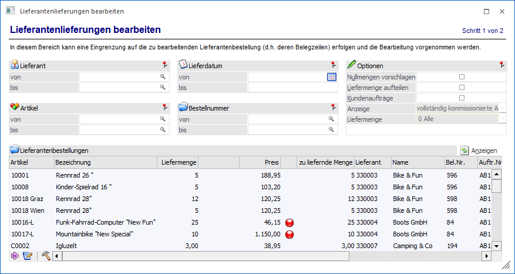
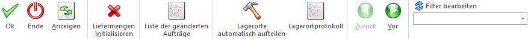

Über den Menüpunkt…
1 WinLine FAKT
1 Einkauf
1 Lieferantenlieferungen bearbeiten
… können alle gedruckten Lieferantenbestellungen (d.h. die jeweiligen Belegzeilen), welche noch nicht geliefert wurden, bearbeitet und Eingangslieferscheine gedruckt werden.
Hinweis
Alle folgenden Erläuterungen gelten gleichermaßen auch für Belege aus dem Bereich "Fertigung".

Die Bearbeitung der Lieferantenlieferungen untergliedert sich hierbei die in folgenden Bereiche, welche in den nachfolgenden Kapiteln beschrieben werden:
ü Bereich "Lieferantenlieferungen
bearbeiten"
In dem Bereich "Lieferantenlieferung bearbeiten" können die
zu bearbeitenden Lieferantenbestellungen (d.h. deren Belegzeilen) selektiert und
bearbeitet werden.
ü Bereich "Lieferantenlieferscheine
drucken"
In dem Bereich "Lieferantenlieferscheine drucken" können die
Lieferantenlieferschein (Einzel- und / oder Sammellieferscheine) für
Lieferantenbestellungen, welche im Bereich "Lieferantenlieferung bearbeiten"
vorbereitet wurden, ausgedruckt werden.
Buttons

Ø Ok
Die Anwahl des Buttons "Ok" bzw. die Taste F5 hat je nach Bereich unterschiedliche Auswirkungen:
ü Bereich "Lieferantenlieferungen
bearbeiten"
Es wird die erfasste Liefermenge in den Beleg geschrieben und
automatisch in den Bereich "Lieferantenlieferscheine drucken" gewechselt. Dort
werden die so vorbereiteten Lieferantenbestellungen zum Druck als
Lieferantenlieferscheine vorgeschlagen.
ü Bereich "Lieferantenlieferscheine
drucken"
Es werden für alle ausgewählten Lieferantenbestellungen die
jeweiligen Lieferantenlieferscheine gedruckt. Der Inhalt der Lieferscheine ist
hierbei abhängig von der Liefermenge des Bereichs "Lieferantenlieferungen
bearbeiten". Zusätzlich wird ein Protokoll ausgegeben, in welchem eventuell
aufgetretene Fehler aufgelistet werden.
Ø Ende
Durch Anwahl des Buttons "Ende" wird das Fenster geschlossen und alle nicht gespeicherten Eingaben verworfen bzw. keine Lieferantenlieferscheine gedruckt.
Ø Anzeigen (nur im Bereich "Lieferantelieferungen bearbeiten")
Mit Hilfe des Buttons "Anzeigen" wird die Tabelle "Lieferantenbestellungen" gemäß der aktuellen Selektion gefüllt.
Ø Liefermengen initialisieren
Die Anwahl des Buttons "Liefermengen initialisieren" wirkt sich je nach Bereich wie folgt aus:
ü Bereich "Lieferantenlieferungen
bearbeiten"
Es wird die gespeicherten Liefermengen (inklusive
Lagerorterfassungen) aller Belegzeilen, welche in der Tabelle
"Lieferantenbestellungen" angezeigt werden, wieder zurückgesetzt, d.h. die ggfs.
gespeicherten Liefermengen verworfen / gelöscht. Anschließend wird die Tabelle
neu aufgebaut und die Spalte "Liefermenge" (je nach Option) gemäß der noch
ausstehenden Bestellmenge oder mit 0 gefüllt.
Hinweis
Bei dem Füllen der Tabelle werden Lagerorterfassungen, welche bereits in der Bestellung vorgenommen wurden, ebenfalls berücksichtigt.
ü Bereich "Lieferantenlieferscheine
drucken"
Es werden jene Liefermengen, welche zuvor im Bereich
"Lieferantenlieferungen bearbeiten" mittels Buttons "Ok" bzw. der Taste F5
gespeichert wurden, wieder zurückgesetzt, d.h. die gespeicherte Liefermenge
verworfen / gelöscht.
Ø Liste der geänderten Aufträge (nur im Bereich "Lieferantelieferungen bearbeiten")
Wurden mit der Option "Kundenaufträge anzeigen" Lieferdaten für Aufträge geändert, so kann mit diesem Button eine Liste aller Belege ausgegeben werden, bei denen das Lieferdatum geändert wurde. Der Ausdruck erfolgt hierbei automatisch in den Spooler.
Ø Lagerorte automatisch aufteilen (nur im Bereich "Lieferantelieferungen bearbeiten")
Durch Anwahl des Buttons "Lagerorte automatisch aufteilen" wird bei allen Artikeln mit Lagerortstruktur eine automatische Aufteilung bzw. Zuweisung auf Lagerorte durchgeführt. Hierbei wird die gesamte Menge dem ersten Lagerort der Erfassungstabelle (siehe Programm "Lagerorte erfassen") zugewiesen.
Hinweis
Bereits getätigte / vorhandene Lagerorterfassungen werden hierbei initialisiert und neu aufgeteilt.
Ø Lagerortprotokoll (nur im Bereich "Lieferantelieferungen bearbeiten")
Mit Hilfe des Buttons "Lagerortprotokoll" kann ein Protokoll über die aktuellen Lagerorterfassungen am Bildschirm ausgegeben werden. Hierbei werden Nullmengen immer unterdrückt und Artikel ohne Lagerortstruktur nicht berücksichtigt.
Ø Vor / Zurück
Mit den Buttons "Vor" und "Zurück" kann zwischen den Bereichen gewechselt werden. Wird durch Anwahl des Buttons "Vor" von "Lieferantenlieferscheine bearbeiten" zu "Lieferantenlieferscheine drucken" gewechselt, so werden nur jene Lieferantenbestellungen zum Druck als Lieferschein vorgeschlagen, deren Daten zuletzt in der Bearbeitung durch Anwahl des Buttons "Ok" bzw. F5 gespeichert wurden. D.h. sollen neue Lieferantenbestellungen zum Druck als Lieferantenlieferschein vorgeschlagen werden, so darf nicht mit dem "Vor"-Button gearbeitet werden.
Ø Filter bearbeiten
Durch Anklicken des Buttons "Filter bearbeiten" können die Arbeitsbereiche nach frei definierbaren Kriterien eingeschränkt werden.
ü Bereich "Lieferantenlieferungen
bearbeiten"
Der Filter wirkt sich auf die anzuzeigenden Belegzeilen der
Tabelle aus, sobald der Inhalt der Tabelle aktualisiert wird (z.B. per Button
"Anzeigen").
ü Bereich "Lieferantenlieferscheine
drucken"
Der Filter wirkt sich auf die Lieferantenbestellungen aus, welche
zum Druck als Lieferantenlieferschein vorgeschlagen werden. Die Filterung wird
angewendet, sobald ein Filter unter "Filter bearbeiten" gewählt wurde.